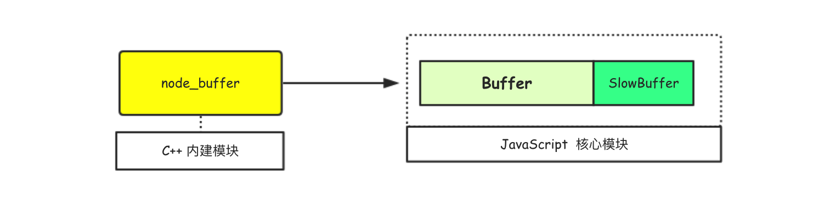

1.0 Buffer介绍 Buffer 是Node中特有的数据类型，它是Node作为运行时对JavaScript进行的拓展，专门用来处理二进制数据流。Buffer 属于固有(built-in)类型的全局变量，在使用的时候无须使用require函数导入。
Buffer实例对象的结构和整数数组很像，但Buffer的大小是固定的且在 V8 堆外分配物理内存。
1 2 3 4 5 6 7 8 9 10 11 12 var buffer = new Buffer("Nice!" );console .log("buffer=>" ,buffer);console .log("length=>" ,buffer.length);console .log("buffer[1]=>" ,buffer[1 ]);buffer[1 ] = 100 ; console .log("buffer=>" ,buffer);buffer =>length=> 5 buffer[1]=> 105 buffer=> <Buffer 4e 64 63 65 21>
Buffer实例的元素为16进制的两位数，即0~255 的数值(16的二次方)，可以像数组一样操作Buffer实例。

Buffer是典型的JavaScript 和 C++ 结合的模块。
**为什么要使用 Buffer ?**
Node提供Buffer数据类型的主要原因是基于性能方面的考虑。
其实在文件I/O和网络传输过程中，不使用Buffer二进制数据也是可以的，但相较而言如果在进行I/O操作和网络数据传输之前预先把静态内容(字符串 | 图片等)转换为Buffer对象，那么可以有效的减少CPU的重复使用、节省服务器资源并大幅提升性能。
2.0 Buffer实例的创建 Buffer实例的构建有多种方式，下面分别介绍。
① 使用Buffer构造函数创建
1 2 3 4 5 6 7 8 9 10 11 12 13 14 15 16 17 18 19 20 21 22 23 24 25 26 27 28 29 30 31 32 33 34 35 36 37 38 39 40 41 42 43 44 45 46 47 48 var buf01 = new Buffer(10 );console .log(buf01);buf01.fill(1 ,2 ,5 ) console .log(buf01);var buf02 = new Buffer([1 ,2 ,3 ,4 ]);console .log(buf02);var buf03 = new Buffer(buf01);console .log(buf03);var buf04 = new Buffer("Nice to meet u!" );var buf05 = new Buffer("刚好遇见你!" ,"utf8" );console .log(buf04);console .log(buf05);var arrM = new Uint16Array (2 );arrM[0 ] = 2000 ; arrM[1 ] = 1000 ; var buf06 = new Buffer(arrM.buffer)console .log(buf06);wendingding$ node index.js <Buffer 00 00 00 00 00 00 00 00 00 00 > <Buffer 00 00 01 01 01 00 00 00 00 00> <Buffer 01 02 03 04> <Buffer 00 00 01 01 01 00 00 00 00 00> <Buffer 4e 69 63 65 20 74 6f 20 6d 65 65 74 20 75 21> <Buffer e5 88 9a e5 a5 bd e9 81 87 e8 a7 81 e4 bd a0 21> <Buffer d0 07 e8 03>
上面的代码中列出了使用Buffer构造函数来创建实例对象的所有方法，我们发现new Buffer() 会根据参数类型的不同而提供不同的实现，而这种使用方式如果没有能够正确地校验传给 new Buffer() 的参数，那么就可能引起安全性与可靠性问题 。因此在6.0.0版本中这个构造对象的API已被废弃(不推荐使用)，在将来的版本中可能会被移除。
② 使用Buffer.from（）创建
1 2 3 4 5 6 7 8 9 10 11 12 13 14 15 16 17 18 19 20 21 22 23 24 25 26 27 28 29 30 var buf01 = Buffer.from([1 ,2 ,3 ,4 ]);console .log(buf01); var buf02 = Buffer.from(buf01);console .log(buf02);var buf03 = Buffer.from("Hi! wendingding" ,"utf8" );console .log(buf03);var buf04 = Buffer.from(new String ('this is a Demo' ));console .log(buf04);var arrM = new Uint16Array (2 );arrM[0 ] = 20 ; arrM[1 ] = 10 ; var buf05 = new Buffer(arrM.buffer)console .log(buf05);
Buffer.from方法创建实例对象的方式和使用Buffer构造函数创建的方式非常相似，这些API均为5.10.0版本新增。相对而言，使用Buffer.from方法创建实例对象会更可靠。
③ 使用Buffer.alloc（）创建
1 2 3 4 5 6 7 8 9 10 11 12 13 14 15 16 17 18 19 20 21 22 23 var buf01 = Buffer.alloc(10 );var buf02 = Buffer.alloc(10 ,"A" );var buf03 = Buffer.alloc(7 ,"bWlhb1hpYQ==" ,"base64" );console .log(buf01); console .log(buf02); console .log(buf03); console .log(buf03.toString("utf8" )); var buf04 = Buffer.allocUnsafe(10 );console .log(buf04); console .log(buf04.fill("A" ));
Buffer.alloc方法用来创建一个指定长度的Buffer实例对象，在调用的时候可以指定fill初始化填充和encoding编码方式。如果指定了对应的参数，那么实例对象内部将调用fill方法，Buffer.alloc方法比 Buffer.allocUnsafe方法会慢一些。
当使用Buffer.allocUnsafe方法创建实例对象时，如果要分配的内存小于4KB，则会从一个预分配的Buffer中切割出来，这可以避免垃圾回收机制因创建太多独立的缓冲区(Buffer)而过度使用。当需要在内存池保留一小块内存时，可用Buffer.allocUnsafeSlow方法创建一个非内存池的Buffer并拷贝出来。
3.0 Buffer和字符串的转换 开发中常见的需求就是Buffer对象和字符串的相互转换，而且很多情况往往需要先读取文件的内容(字符串)，然后把该内容转换为Buffer数据。这里简单介绍Buffer和字符串转换的基本方式。
字符串 → Buffer
如果要把字符串转换成Buffer对象，那么只需要使用Buffer.from方法即可(当然也可以直接使用Buffer构造函数来创建，但是并不推荐)，具体的语法形式为Buffer.from(string, [encoding]),其中第一个参数代表是要转换的字符串信息，而第二个可选的参数代表是转换时候采用的编码模式。
Node目前支持的字符编码类型
❏ Hex Base64 ASCII Binary Latin1。UTF-8 UTF-16LE UCS-2。
Buffer → 字符串
如果要把Buffer对象转换为字符串，那么可以使用Buffer实例对象的toString方法，具体的语法形式为buf.toString([encoding, [start, [end]]]) ，其中encoding参数代表的是编码模式，start和end参数用来指定开始解码和结束解码的偏移量，其中start参数的默认值为0，而end参数的默认值buf.length。
1 2 3 4 5 6 7 8 9 10 11 12 13 14 15 16 17 18 19 20 21 22 23 24 25 26 27 28 29 30 31 32 33 34 35 var strM = 'Nice!' ;var buf = Buffer.from(strM,"utf8" );console .log(buf); var resultStr = buf.toString();console .log(resultStr); console .log(buf.toString("utf8" )); console .log(buf.toString("utf8" ,2 )); console .log(buf.toString("utf8" ,2 ,4 )); console .log(buf.toString("base64" )); var fs = require ("fs" );fs.readFile("./Hi.text" ,"utf8" ,function (error,data ) if (error) throw error; console .log(data); }) fs.readFile("./Hi.text" ,function (error,data ) if (error) throw error; console .log(data); console .log(data.toString()); })
**Buffer 的拼接**
Buffer实例和字符串虽然可以转换，但在处理Buffer数据的时候却不能简单的像字符串一样简单的使用 + 来进行拼接，因为二进制数据流中的数据可能是宽字节编码的。先看一个简短的示例：
1 2 3 4 5 6 7 8 9 10 11 12 var fs = require ("fs" );var rs = fs.createReadStream("Hi.text" ,{highWaterMark :10 });var data = '' ;rs.on("data" ,function (chunk ) console .log("data····" ,chunk.length); data += chunk; }) rs.on("end" ,function ( console .log("data=>" ,data); console .log("data.length=>" ,data.length) });
上面的代码中我们通过createReadStream方法来读取Hi.text文件的内容，highWaterMark配置项(字面意思是最高水位线)用来控制内部缓冲区最多能够容纳的字节数，如果超过那么就停止读取资源文件，默认值为64KB 。
假设文件的内容大小为150KB，那么默认情况下在执行代码的时候将会每次从文件中读取64KB的数据，触发data事件，在data事件回调函数中chunk参数的大小就是highWaterMark的大小，即64KB。读取两次后(128KB)，接着读取剩下的32KB大小的数据，此时将第三次触发data事件，继而整个文件数据均读取结束，最后触发end事件。
1 2 3 4 5 6 7 8 9 10 11 12 13 14 15 16 17 18 19 20 21 22 wendingding$ cat Hi.text Hi! wendingding Hi! LiuY wendingding$ node buffer2string.js data···· 10 data···· 10 data···· 5 data=> Hi! wendingding Hi! LiuY data.length=> 25 wendingding$ cat Hi.text 文顶顶：嗨，很高兴遇见你！ wendingding$ node buffer2string.js data···· 10 data···· 10 data···· 10 data···· 10 data=> 文顶顶���嗨，��高兴遇见你！ data.length=> 17
设置Hi.text文件的内容，运行查看结果。如果文件的内容是全英文(字母)，那么这样拼接没有问题。可一旦文件中的存在中文，那么最后的结果中就可能会出现乱码。这是因为data += chunk这行代码在实际执行的时候，隐藏了调用toString()的操作，也就是说这行代码真正执行的时候其实是data = data.toString() + chunk.toString()这样的。
因为在UTF-8编码中一种中文汉字占三个字节，又因为设置了highWaterMark字段控制了每次读取的字节数，因此会出现截断，而剩下的部分则以乱码的方式显示。我们可以在data事件的回调函数中把每次读取的chunk都打印出来。
1 2 3 4 5 6 7 8 9 10 11 12 13 14 15 16 rs.on("data" ,function (chunk ) console .log("data····" ,chunk); console .log("string····" ,chunk.toString()); data += chunk; }) data···· <Buffer e6 96 87 e9 a1 b6 e9 a1 b6 ef> string···· 文顶顶� data···· <Buffer bc 9a e5 97 a8 ef bc 8c e5 be> string···· ��嗨，� data···· <Buffer 88 e9 ab 98 e5 85 b4 e9 81 87 > string···· �高兴遇 data···· <Buffer e8 a7 81 e4 bd a0 ef bc 81 0a> string···· 见你！
通过观察可以发现，当chunk调用toString方法进行字符编码的时候，默认使用UTF-8模式中文每三位一组，在设置了highWaterMark值为10之后，就注定了会出现字符截断的情况。为了方便大家理解这个过程，下面尝试对转换和截断过程进行分析。
1 2 3 4 5 6 7 8 9 10 11 12 13 14 15 16 17 18 19 20 21 22 23 24 25 26 27 28 29 30 31 32 33 wendingding$ node > Buffer.from([0xe6 ,0x96 ,0x87 ,0xe9 ,0xa1 ,0xb6 ,0xe9 ,0xa1 ,0xb6 ]).toString(); '文顶顶' > Buffer.from([0xef ]).toString(); '�' > Buffer.from([0xbc ]).toString(); '�' > Buffer.from([0x9a ]).toString(); '�' > Buffer.from([0xe5 ,0x97 ,0xa8 ]).toString(); '嗨' > Buffer.from([0xef ,0xbc ,0x8c ]).toString(); '，' > Buffer.from([0xe5 ,0xbe ]).toString(); '�' > Buffer.from([0x88 ]).toString(); '�' > Buffer.from([0xe9 ,0xab ,0x98 ,0xe5 ,0x85 ,0xb4 ,0xe9 ,0x81 ,0x87 ]).toString(); '高兴遇' > Buffer.from([0xe8 ,0xa7 ,0x81 ,0xe4 ,0xbd ,0xa0 ]).toString(); '见你' > Buffer.from([0xef ,0xbc ,0x81 ]).toString(); '！'
**注意** `createReadStream`函数中highWaterMark值的设置对Buffer内存的分配和使用有一定的影响，该值的大小与数据流的读取关系紧密(值越大，读取的速度越快)，如果这个值设置得很小可能会导致系统调用次数过多影响性能。理想的情况该值的大小应该和数据的大小等同。
如果需要在代码中对Buffer实例进行拼接，官方推荐的做法是使用Buffer.concat方法,该方法接收一个Buffer对象数组作为参数，返回拼接后的完整Buffer实例，下面给出简短示例。
1 2 3 4 5 6 7 8 9 10 11 12 13 14 15 16 17 18 19 20 21 22 var fs = require ("fs" );var rs = fs.createReadStream("Hi.text" ,{highWaterMark :10 });var data = [];rs.on("data" ,function (chunk ) console .log("data..." ); data.push(chunk); }) rs.on("end" ,function ( console .log("end···" ); var buf = Buffer.concat(data); console .log(buf.toString()); }); wendingding$ node buffer2string.js data... data... data... data... end··· 文顶顶：嗨，很高兴遇见你！
4.0 Buffer的主要方法 Buffer还有很多其它可用方法，这些方法大致可以分成静态方法和实例方法。
❏ 静态方法 Buffer函数自身的方法(ex Buffer.XXX)实例方法 Buffer函数创建的实例对象的方法(ex buf.XXX)
这里列出主要静态方法(类方法)，并给出简短代码示例。
Buffer.isBuffer(obj) 检查是否是Buffer实例Buffer.isEncoding(encoding) 检查是否支持指定的字符编码模式Buffer.byteLength(string[, encoding]) 获取字符串的实际字节长度Buffer.compare(buf1, buf2) 对Buffer实例进行排序(buf1和buf2)Buffer.concat(list[, totalLength]) 合并list中的多个Buffer实例对象
1 2 3 4 5 6 7 8 9 10 11 12 13 14 15 16 17 18 19 20 21 22 23 var obj = {name :"wendingding" ,age :18 };var buf = Buffer.from("Nice!" );console .log("obj是否是Buffer:" ,Buffer.isBuffer(obj));console .log("buf是否是Buffer:" ,Buffer.isBuffer(buf));console .log("是否支持Base64：" ,Buffer.isEncoding("Base64" ));console .log("是否支持GB2312：" ,Buffer.isEncoding("GB2312" ));console .log("字符串的长度为：" ,"Nice to meet u! 嘻嘻" .length);console .log("实际字节长度为：" ,Buffer.byteLength("Nice to meet u! 嘻嘻" ));wendingding$ node buffer.js obj是否是Buffer: false buf是否是Buffer: true 是否支持Base64： true 是否支持GB2312： false 字符串的长度为： 18 实际字节长度为： 22